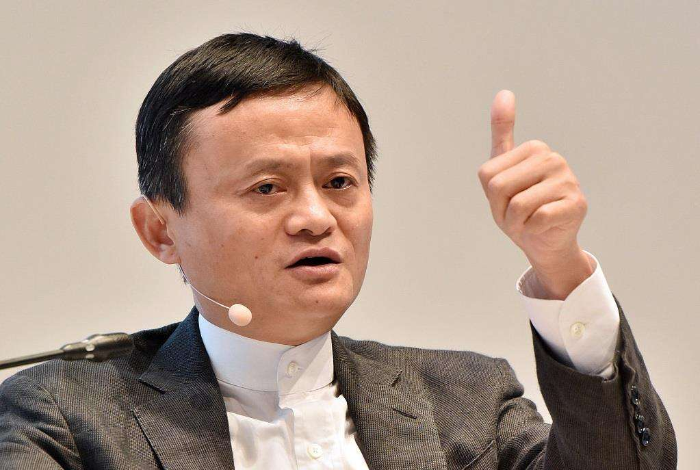
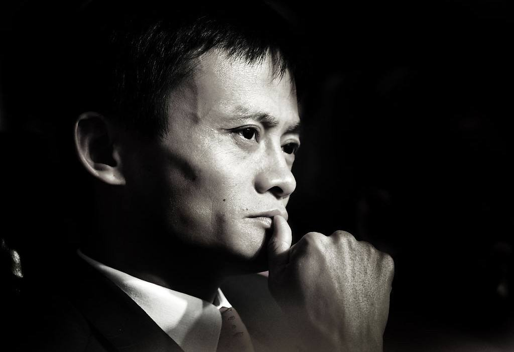
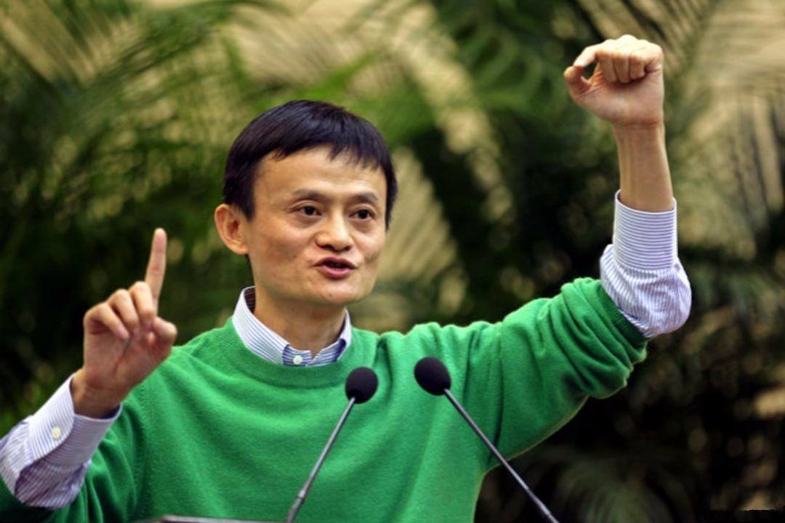

马云
马云，1964年9月10日生于浙江省杭州市，阿里巴巴集团主要创始人，现担任日本软银董事、大自然保护协会中国理事会主席兼全球董事会成员、华谊兄弟董事、生命科学突破奖基金会董事、联合国数字合作高级别小组联合主席。
重要事件
- 1995年3月，马云从杭州电子工业学院辞职，开始首次创业
- 1999年3月，马云成立阿里巴巴
- 2003年5月10日，马云创立淘宝网，开始抢夺eBay易趣C2C市场
- 2004年12月，马云创立第三方网上支付平台支付宝
-
2007年11月，马云创立的阿里巴巴网络有限公司在香港联交所主板挂牌上市
- 2013年5月10日，马云正式卸任阿里巴巴集团CEO
- 2014年9月19日，阿里巴巴集团于纽约证券交易所正式挂牌上市
-
2015年10月26日，2015年福布斯中国富豪榜在北京发布，马云以218亿美元财富，排名第二
-
2017年7月17日，《福布斯富豪榜》发布，马云以354亿美元身家排在第18位，重新取代王健林成为华人首富
- 2020年，福布斯全球亿万富豪榜，马云以388亿美元排名第17位
- 2020年9月30日，马云不再担任阿里巴巴集团董事
社会活动
- 2000年7月10日，马云成为《福布斯》杂志封面人物。
- 2009年，马云加入TNC中国理事会。
-
2009年5月5日，亚太经济合作组织（APEC）工商咨询委员会（ABAC）任命马云为2010年ABAC行动计划和APEC资源工作委员会主席。
- 2010年4月16日，马云加入大自然保护协会（TNC）全球董事会。
- 2013年5月11日，马云出任TNC（大自然保护协会）中国理事会主席。
-
2013年9月27日，阿里巴巴集团创始人马云夫妇作为捐助人正式加入生命科学突破奖基金会
- 2013年10月受邀出任英国首相戴维·卡梅伦的特别经济事务顾问。
-
2014年4月，马云向自己的母校杭州师范大学捐赠1亿元人民币，设立“杭州师范大学马云教育基金”。这笔捐赠将由杭州师范大学教育基金会专项管理。
-
2015年1月，马云作为亚洲和大洋洲地区的私营部门代表，当选全球互联网治理联盟委员会成员。
- 2015年4月，马云获第12届“中国首善”称号， 捐赠额达124亿元。
-
2015年4月10日，由马云、马化腾出任该机构董事会联席主席的“桃花源生态保护基金会”宣布成立
-
2015年6月30日，全球互联网治理联盟在巴西圣保罗召开全体理事会，选举了3名联合主席，阿里巴巴董事局主席马云当选理事会联合主席。
-
2015年9月8日，胡润2015年华人慈善报告出炉，马云通过捐赠阿里巴巴股权设立慈善信托基金。
-
2015年9月11日消息，联合国妇女署今日宣布阿里巴巴集团董事局主席马云将受邀参加9月27日在纽约联合国总部举行的全球妇女峰会。
-
2015年9月15日，北京大学首届社会公益管理硕士项目开学典礼暨北大光华银泰公益管理研究中心揭牌仪式在光华管理学院举行。马云受邀为新生讲授开学第一课。
-
2015年9月16日，马云公益基金会在北京启动“马云乡村教师计划暨首届马云乡村教师奖”。
人物成就
| 年份 |
财富 |
排名 |
| 2016年 |
2050亿元 |
第2位 |
| 2018年 |
2700亿元 |
第1位 |
| 2019年 |
2750亿元 |
第1位 |
| 2020年 |
3050亿元 |
第23位 |
生活照



个人生活
马云的妻子叫张瑛，为人低调，两人是大学同学，毕业后领取结婚证，还是马云教书时的同事，最后成了马云人生伴侣加事业伙伴。马云创业时，张瑛也在公司帮忙，2004年，张瑛辞去阿里巴巴中国事业部总经理的职位，退出阿里巴巴管理层，安心在家相夫教子，做起了全职太太。
马云的儿子叫马元坤，出生于1992年。
阿里巴巴创始人马云2016年6月豪掷1200万欧元(约合8900万人民币)，买下两座历史悠久的法国葡萄酒庄园，这也是马云继2016年2月之后再次投资葡萄酒庄园。
2019年1月，马云为自己创办的音乐酒吧举行了开业仪式，该酒吧名为“HHB音乐酒吧”。